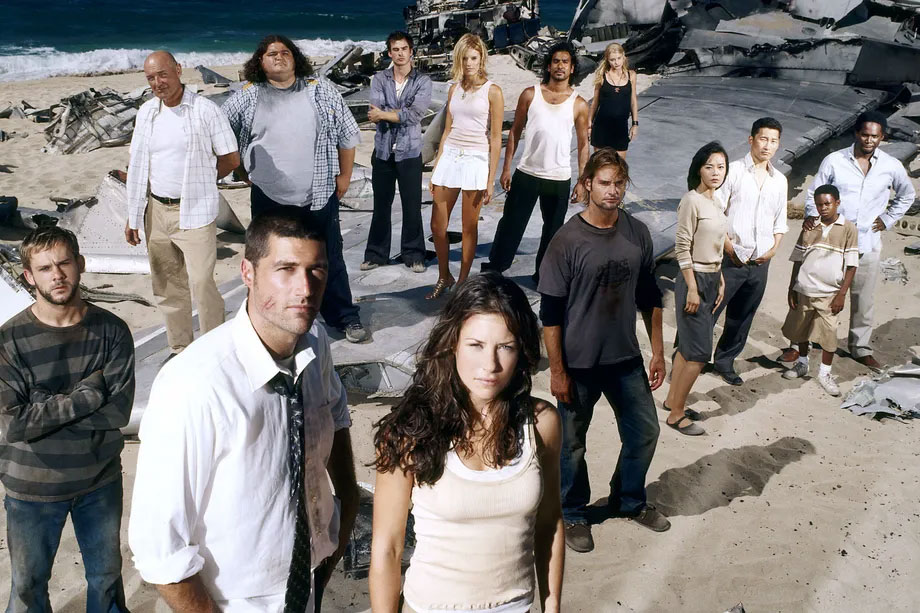

This article was repurposed from Vox.com and is only being used as a sample exercise in J352/652.
In Watch This, Vox critic at large Emily VanDerWerff tells you what she’s watching on TV — and why you should watch it too. Read the archives here. This week: the classic sci-fi drama Lost, which debuted 15 years ago on September 22, 2004. Watch all six seasons on Hulu.
Are we still living in the long shadow of Lost?
No matter what you think about the six-season drama about a group of airplane passengers stranded on a deserted island — which turned out to be not so deserted after all — and especially no matter what you think about its series finale, to watch the show now, 15 years after its debut, is to realize how shockingly modern it still seems, and how much and how little TV has learned from its success.
In some ways, Lost is the show every other show wants to be. Its massive ensemble cast, flashback-infused storytelling, and mystery box appeal have influenced everything from Orange Is the New Black to The Handmaid’s Tale, and that’s just me naming two particularly obvious examples.
In other ways, it’s a cautionary tale. The divisive series finale (and the supposed lack of planning that led up to it) have inspired a kind of hyper-preparedness in other serialized TV shows. Such hyper-preparedness can be a good thing, but more often, it results in strained storytelling. It backfired with Game of Thrones’ recent finale in ways that, I would argue, make the Lost finale look better.
But a lot of what Lost did hasn’t been done as well since. If you’ve never seen the show — even if you think you know all of its secrets — you might be surprised by just how new and different it feels on a first watch. And if you have seen it before, you might be surprised by how well it holds up on a rewatch.
The first season of Lost was one of those lightning-in-a-bottle moments TV has every so often. The “mysterious island” logline was easy to sell in marketing and word-of-mouth, the cast was full of perfectly chosen actors, and co-creators J.J. Abrams and Damon Lindelof (along with Jeffrey Lieber, who left the project before Abrams and Lindelof came onboard but still has a co-creator credit) were rising TV writer and showrunner stars.
What was perhaps most addictive about Lost was how it sprinkled its mysteries over the top of rich character stories in a way that transformed the mysteries into unexpected, tasty seasoning. Learning the backstory of John Locke (Terry O’Quinn) was enhanced when he ran into a mysterious monster deep in the woods of the Island (in the show’s third episode, no less). The character stuff fed the mystery stuff and vice versa.
But because the mysteries became so intrinsic to how Lost was discussed in the media, they are often the only thing the uninitiated know about the series — and many have heard the mysteries were never solved. That both is and isn’t true. Lost did, indeed, provide answers, but never in the form of a character standing up to explain exactly what was happening.
The question of “Why was there a polar bear on the Island?” — a conundrum set up in the pilot that lots of viewers claimed was never answered — actually is resolved in the show’s fourth season, but only indirectly. It was often this way with Lost: Because the show prioritized character stories over lore, it left the lore to hardcore superfans to decode. But if you were a more casual viewer, the mysteries were a fun, added element to the saga of Jack, Kate, and all the rest.
At its core, Lost is like a much poppier version of Lindelof’s later series The Leftovers. It is obsessed with grief and unfinished business, and it revolves around characters who don’t know how to give up, even when they probably should. The Island became a space for them to work out their psychic and existential angst, often on a grand scale, as Michael Giacchino’s orchestral score soared on the soundtrack and director Jack Bender provided sweeping vistas to gaze upon.
Lost’s first season was a mega-hit, and it won the Emmy for Outstanding Drama Series. The show also helped revive the left-for-dead ABC network (along with Desperate Housewives and Grey’s Anatomy, both of which launched in the same TV season). Later on, the show had its issues — the simple act of turning a seemingly limited premise into a story that could sprawl over six seasons led to some inevitable dead-ends here and there. But even when Lost stumbled, it had a majesty to it that was hard to ignore.
And if nothing else, the end of Game of Thrones has gotten a lot of people thinking about Lost again. Two different re-watch podcasts have launched over the summer, featuring some heavy-hitter hosts, and not an interview goes by when ABC’s current president isn’t asked if she’s thinking about rebooting the show. (My take: It’s probably inevitable, but if it happens, the new creators should find a way to keep the core of what made Lost great and then leave the Island and its mysteries in the dust. And yes, ABC, I have a pitch — call me.)
But Lost itself will forever be frustrating and wonderful and dopey and endlessly brilliant. It remains one of my favorite TV shows ever made, I will never stop defending the finale, and it’s often the only thing I want to talk about. To watch Lost is to see the TV culture of the 2010s being born over 121 episodes on one strange but beautiful Island.
Lost is available in its entirety on Hulu.